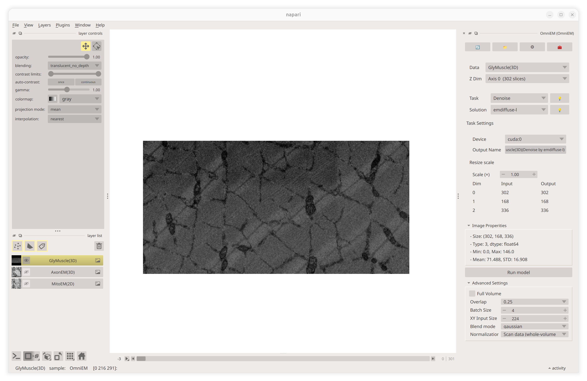
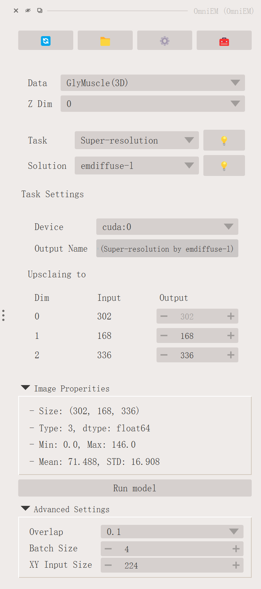
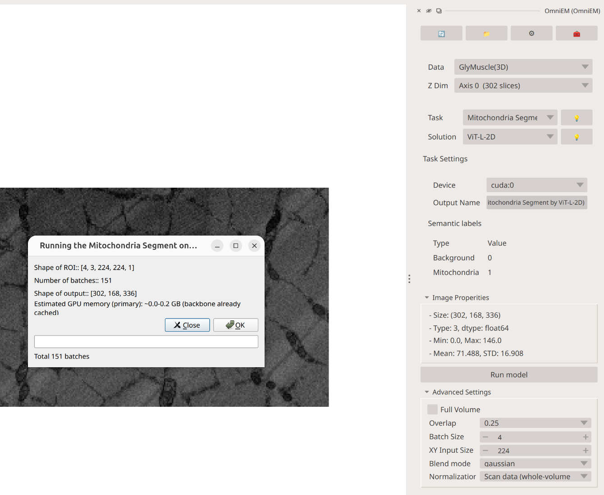
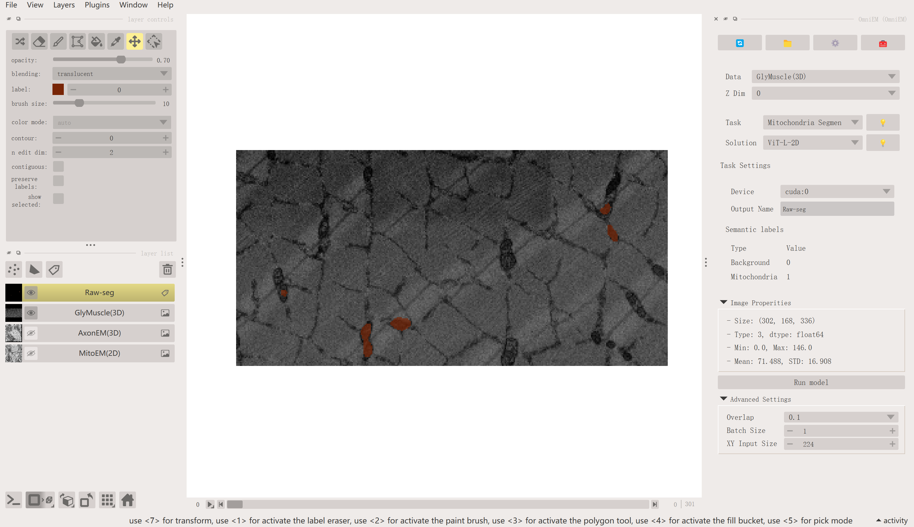
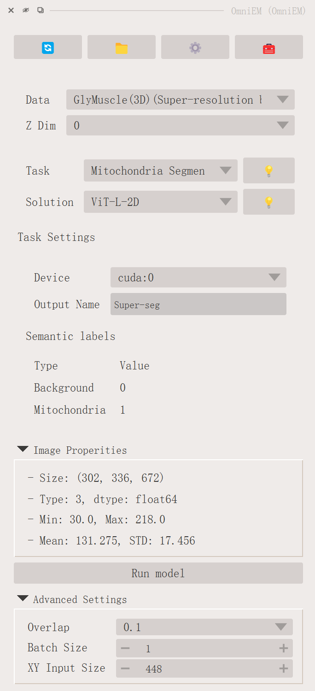
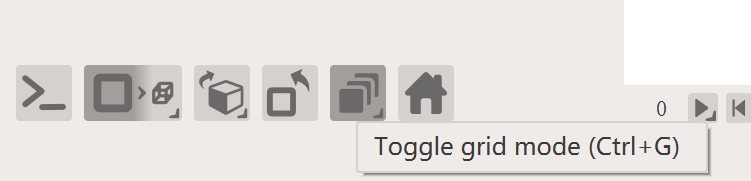
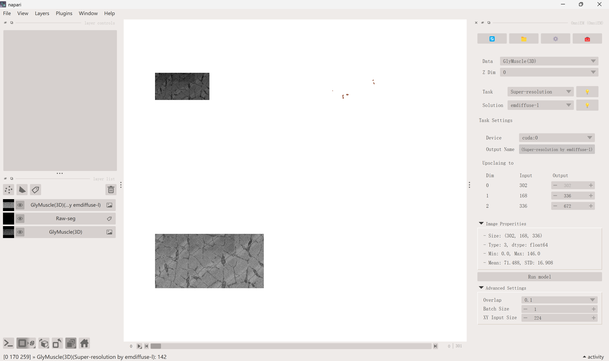
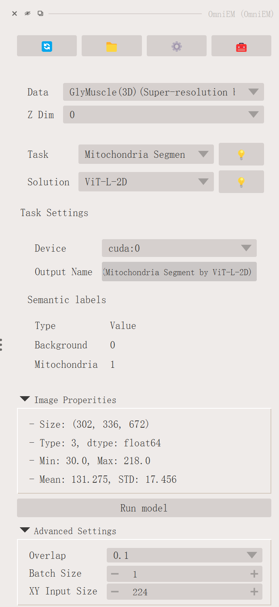
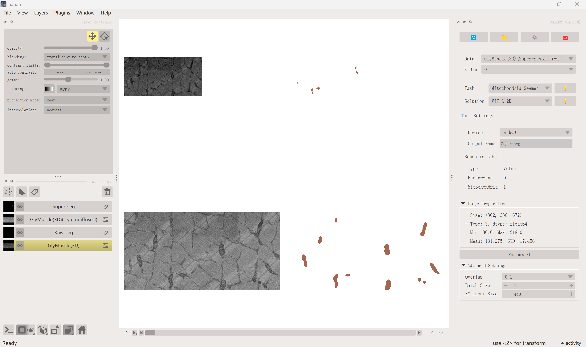
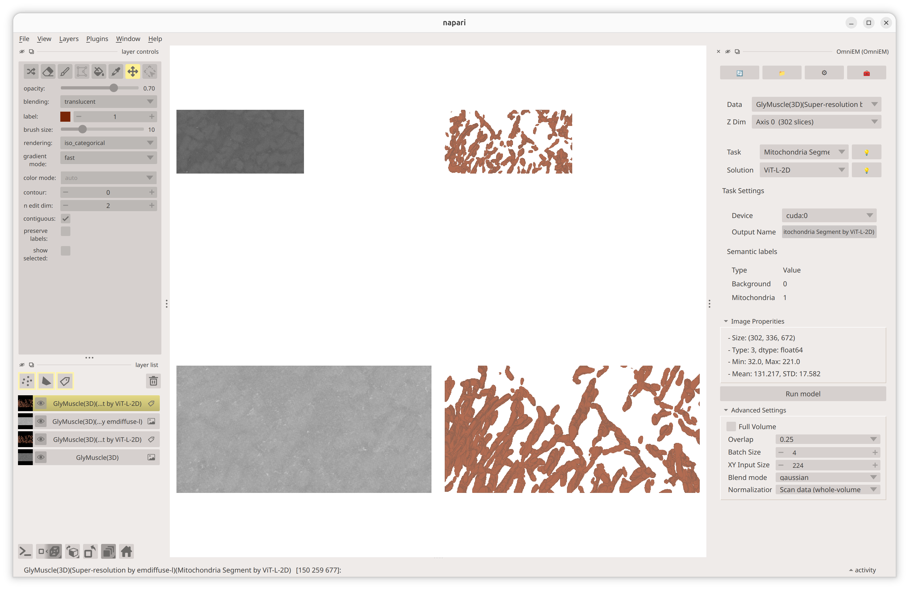

Multi-Task Inference: Super-Resolution + Segmentation
Screenshots
Screenshots on this page show the v0.2 interface and are pending update.
One advantage of Napari-OmniEM is the ability to chain multiple models for analysis. This page demonstrates how applying super-resolution before segmentation can yield better mitochondria segmentation results compared to direct segmentation on the original data (Figure 5 in the manuscript).
The experiment uses the downsampled glycolytic muscle EM dataset from MitoLab. The downsampled data is available as sample data in Napari-OmniEM. This page walks through two workflows:
- Direct segmentation: segment mitochondria directly in the downsampled data.
- Super-resolution + segmentation: upsample the data first, then segment.
Data
Click File → Open Sample → OmniEM → EM to load the bundled sample data (this loads three datasets; use the GlyMuscle (3D) layer here).

Open the OmniEM panel and select the data in the Data dropdown. Set the z-dimension to 0. Then open the Image Properties panel to verify the data size: [302, 168, 336].

Direct Mitochondria Segmentation
Select Mitochondria Segmentation in the Task dropdown. We recommend the ViT-L-2D solution for its better generalization. Adjust the hyperparameters as needed, for example, set the output name to raw-seg to identify the result, and reduce the batch size to 1 to reduce memory usage.

Click Run model and wait for the results.

Super-Resolution
Select Super-resolution in the Task dropdown. Set the Scale (×) control to 2.0, this doubles both in-plane axes (168 → 336 and 336 → 672); the z-axis is never scaled. The panel shows the resulting output shape.

Click Run model to start super-resolution inference. After inference completes, we recommend removing unused data layers and switching to Grid view mode to compare results side by side.


Mitochondria Segmentation on Super-Resolved Data
Select the new super-resolution image in the Data dropdown (layers sync automatically; use 🔄 Synchronize Data only if it is missing). Select Mitochondria Segmentation as the task. For better results, increase the XY Input size to a larger value (e.g., 448) to better fit the increased data resolution.

Click Run model and wait for the segmentation results.

Switch to 3D view mode to see the differences more clearly.

Conclusion
Napari-OmniEM enables flexible chaining of multiple models within a single interactive workflow. By combining tasks such as super-resolution and segmentation, users can leverage complementary models to achieve better analysis outcomes than any single model alone. This composability is a core strength of the plugin, making it adaptable to diverse EM datasets and analysis goals.